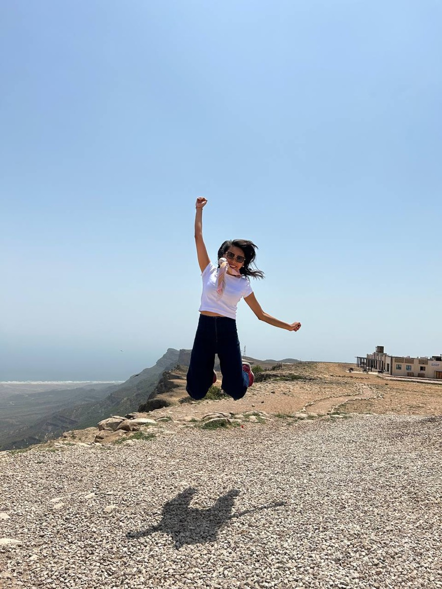
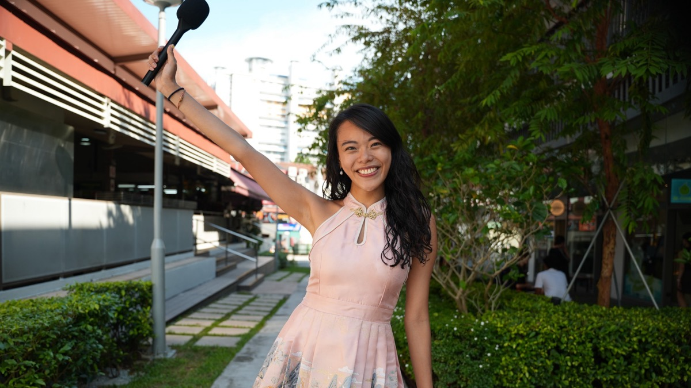
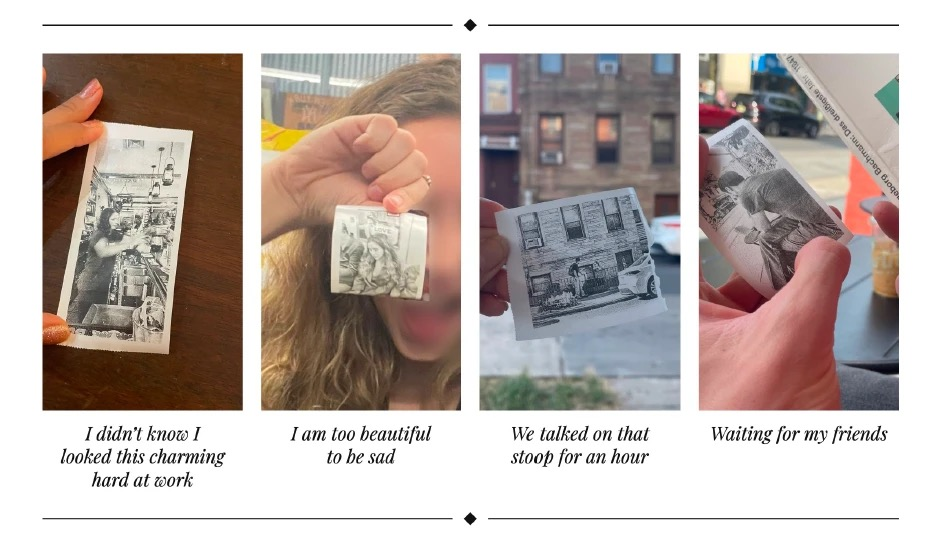
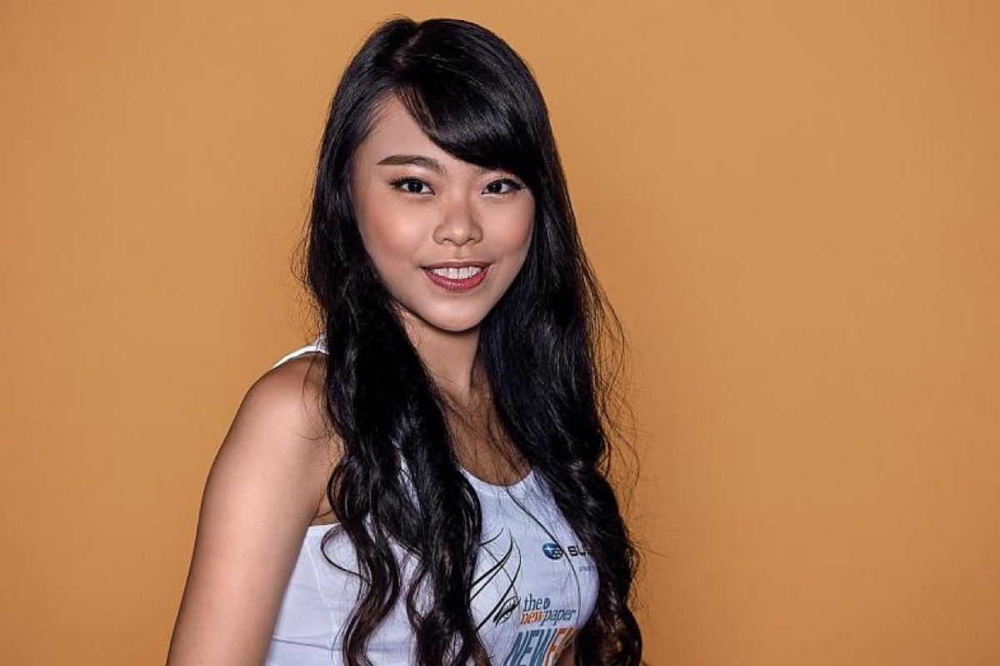
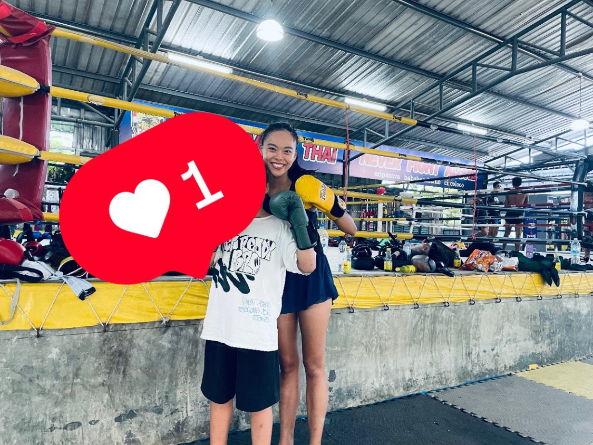
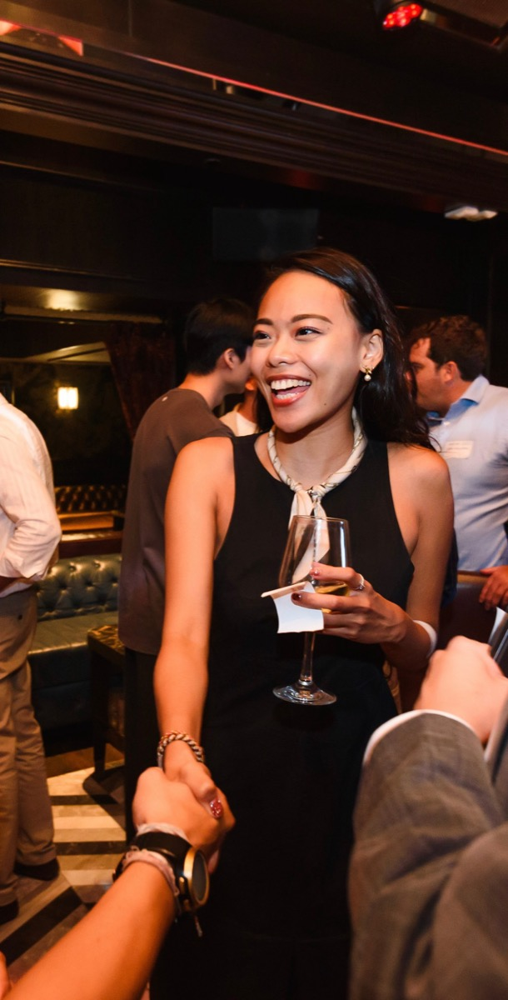
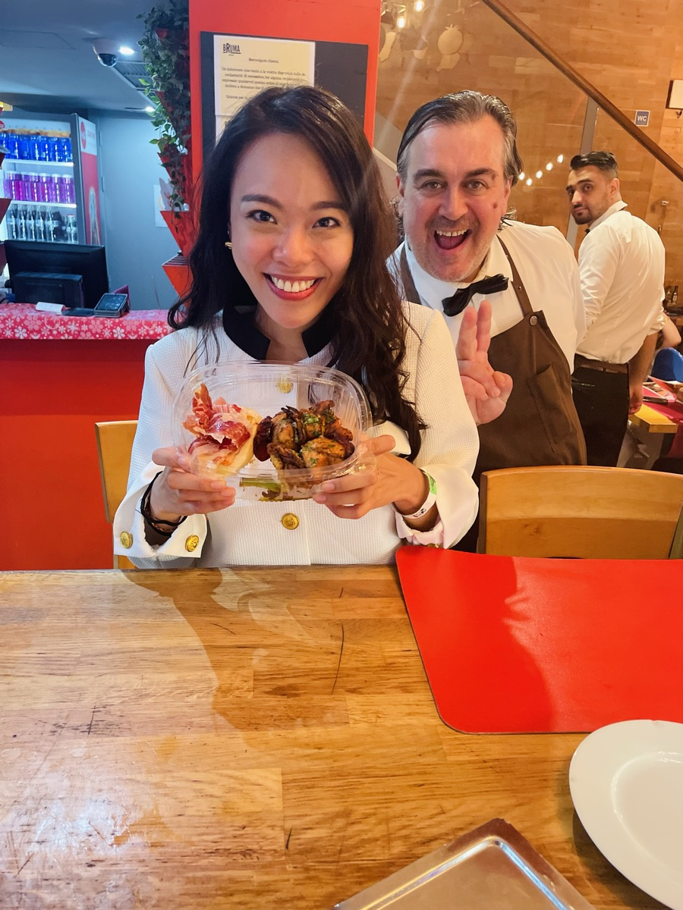
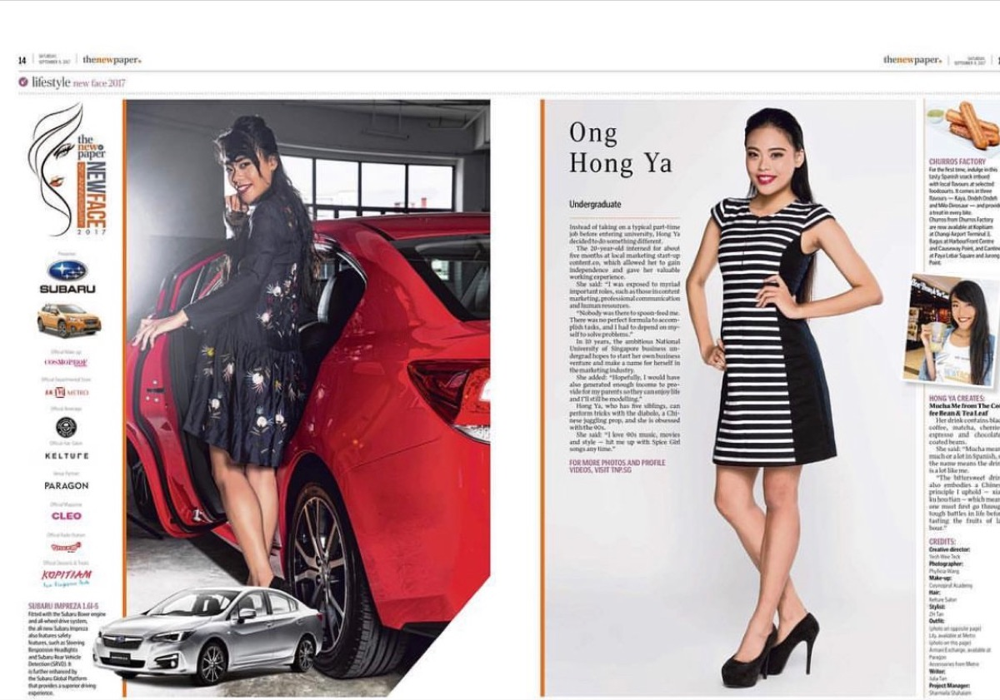

Always experimenting.
Hover over (or tap) a photo for the story. Drag or swipe to look around.

I travelled a lot during consulting days, exploring multiple countries by myself, especially in the Middle East and Europe. This is Salalah.

I approached strangers and interviewed them behind the camera for a YouTube channel with 4M+ subscribers.
I rewarded myself for my 26th birthday with a lovely trip to Venice, a magical place I'd always wanted to visit since I was young. I met Filippo, an Italian who shared how photography made him happy and allowed him to feel again. He offers photography services in Venice, and he took pictures of me for free, along with a mini tour. Reach out to me for his contact details if you're ever visiting!

I blend in at events, take candid photos, and hand vintage-inspired prints straight to guests as keepsakes.

One of 20 chosen from hundreds of ladies for a national modelling competition. I did commercial shoots from high school through college, plus a few runway walks.

I did a Muay Thai bootcamp in Thailand: 4 hours of classes a day, morning runs, and getting outfought by an 11-year-old girl. I'm terrible at it, and that was the point. I wanted proof that I can learn and try anything.

I travelled a lot during consulting days, exploring multiple Middle Eastern countries by myself. I missed the Petra marathon, and am not fit enough to run it, so I ran my own little one.

I blend in at events, take candid photos, and hand vintage-inspired prints straight to guests as keepsakes.

While travelling alone, I try to talk to and learn from people in the country. That includes service staff at restaurants I visit 😃

One of 20 chosen from hundreds of ladies for a national modelling competition. I did commercial shoots from high school through college, plus a few runway walks.

I blend in at events, take candid photos, and hand vintage-inspired prints straight to guests as keepsakes.